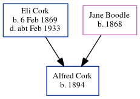

Frank Cork 1898 -
[ Home ] | [ Calendar ] | [ Surnames Index ] | [ Errors ] | [ Family History ]The child of Eli Cork (a labourer on a farm) and Jane Boodle, Frank Cork, the second cousin twice-removed on the mother's side of Nigel Horne, was born in Harbledown, Kent, England in 18981.
During his life, he was living at Plough Row in Harbledown on 31 Mar 19011 and on 2 Apr 19112.
Parents
- Eli George was born on 6 Feb 1869
- Jane was born in 1868
Citations
- 1901 England, Wales & Scotland Census - Findmypast (was age 3 and the son of the head of the household)
- 1911 Census for England & Wales - Findmypast (was age 12 and the son of the head of the household)
Family Tree
Map
Generated by ged2site. Last updated on Jul 3, 2024